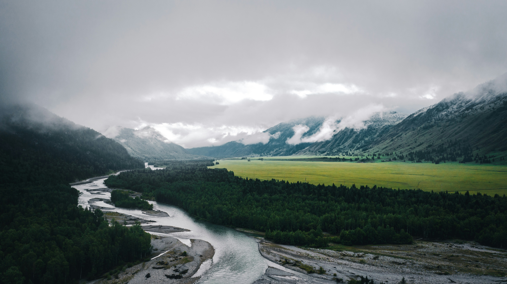
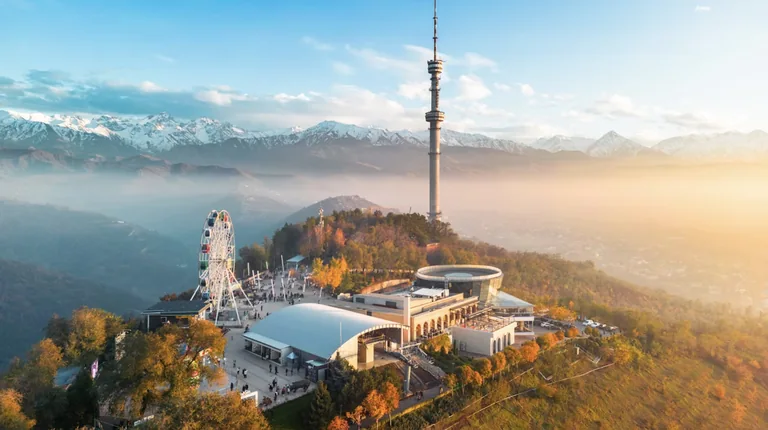
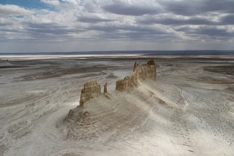

Destinations
in Kazakhstan
From the Caspian coast to the Tian Shan mountains, find the city that fits your trip.
Explore the four citiesExplore the cities
4 places to discover
Astana
See the capital from Baiterek Tower, then follow the Ishim River past the modern skyline.

Almaty
Explore the city’s tree-lined streets, then head to Medeu and Shymbulak in the Tian Shan.
Shymkent
Walk through the dendropark, browse a local bazaar and try southern Kazakh cooking.
No cities found
Try a different search or show all cities.
Build a route
Choose a city and get a one-, two- or three-day itinerary you can copy.

Weather forecast
A coast-side stroll or a mountain morning? Check the next three days before you head out.
Your forecast will load here.
Current conditions
Weather data: Open-Meteo · CC BY 4.0 . Local time (UTC+5). City forecasts; mountain and desert conditions can differ.
A small guide.
A world of possibilities.
4 city destinations
9 pages to explore
9 photos in our home gallery
Big landscapes. Local stories.
For first-time visitors, students and anyone planning a short Kazakhstan break, KZ Travel brings city guides, route ideas and local forecasts together.
Detailed City Guides
- Top attractions and hidden gems
- Photo highlights and city character
- Ideas for choosing your next destination
Travel Tips & Insights
- Planning for outdoor time
- Cultural etiquette and language basics
- Simple tips for planning your visit
Before You Set Off
Choose a destination
Start with a city guide, then compare coastlines, mountain scenery, and city walks.
Plan your route
Group nearby sights together and leave time for travel between stops.
Pack for the season
Check the forecast before leaving and bring comfortable shoes for exploring.
Scenic Horizons of Kazakhstan
A visual tour through desert canyons, snowy mountains, and futuristic capitals. Select an image to view its city guide.
Nine Views of Kazakhstan
Explore more of Kazakhstan using the arrows or the nine slide indicators.
Kazakhstan Quick Facts
A sample route to adapt to your interests. Check travel times, access, and opening hours before visiting.
| Fact | Detail | Note |
|---|---|---|
| Area | 2.7 million km² | 9th largest country in the world |
| Population | ~20 Million | Highly diverse and multicultural |
| Climate | Extreme Continental | Very hot summers, very cold winters |
Travel Questions, Answered
Select a question to read the answer. Select it again to close it.
Search questions and answers.
Our guides cover Aktau, Astana, Almaty, and Shymkent. Choose a destination card on the homepage to explore its sights, photos, and sample itinerary.
Use the homepage quick facts table, then open a city guide. Each guide includes attractions and a route idea to help you choose what interests you.
KZ Travel is a student travel guide. Routes and enquiry forms do not create bookings or send messages. Demo accounts are saved only on your browser; use the Log in link to create an account and open your profile.
Open Our Story and select Contact Us. Enter your name, email, phone number and message, then check the form. Close it with Escape, the close button or a click outside.
Behind This Guide
We are Ramazan Utegen, Ziyadinkhan, and Ruzimuhammad from group SE-2501. We created KZ Travel to practise HTML, CSS, Bootstrap, and JavaScript while sharing useful information about Kazakhstan.
Ramazan created Home and Aktau. Ziyadinkhan created Astana and About Us. Ruzimuhammad created Almaty and Shymkent.